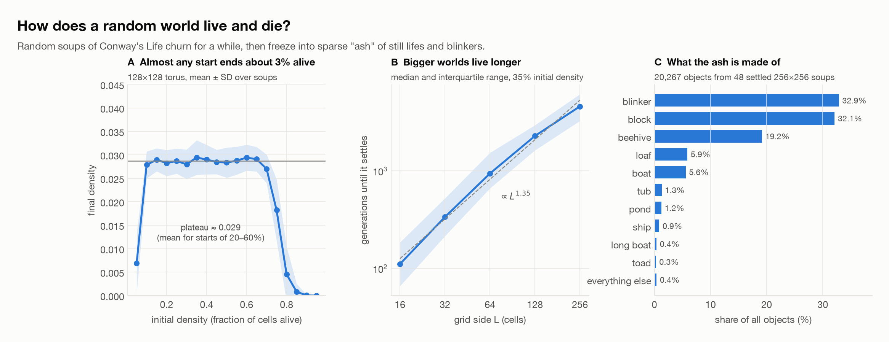
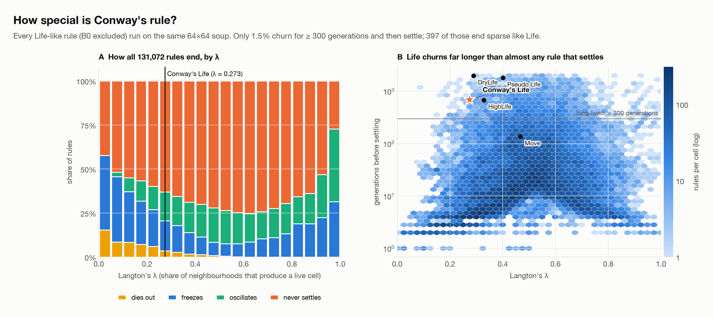
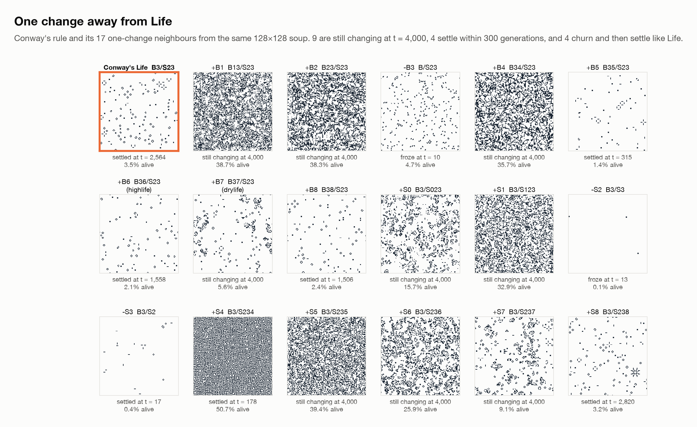
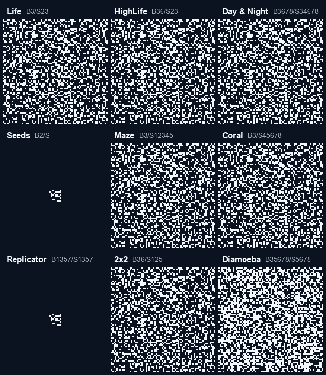
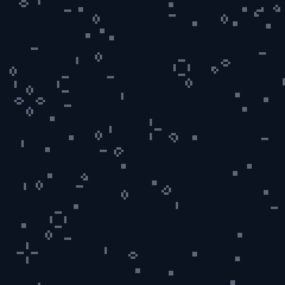
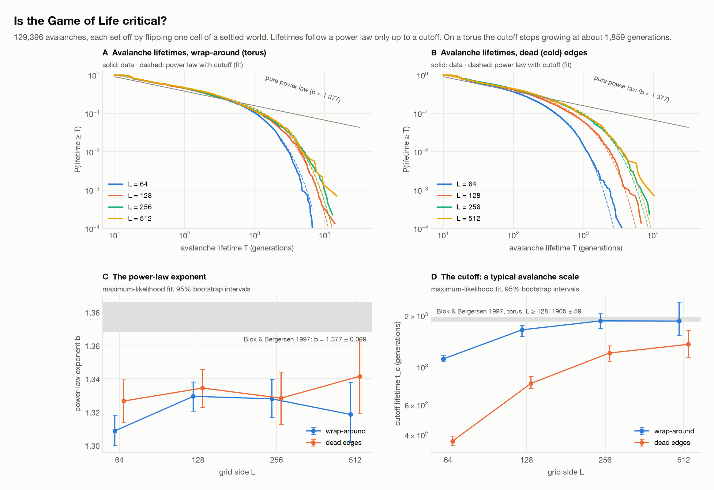
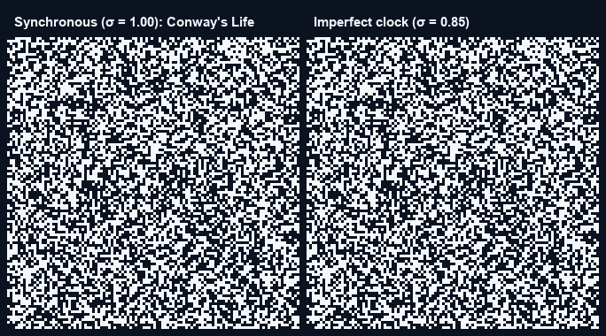
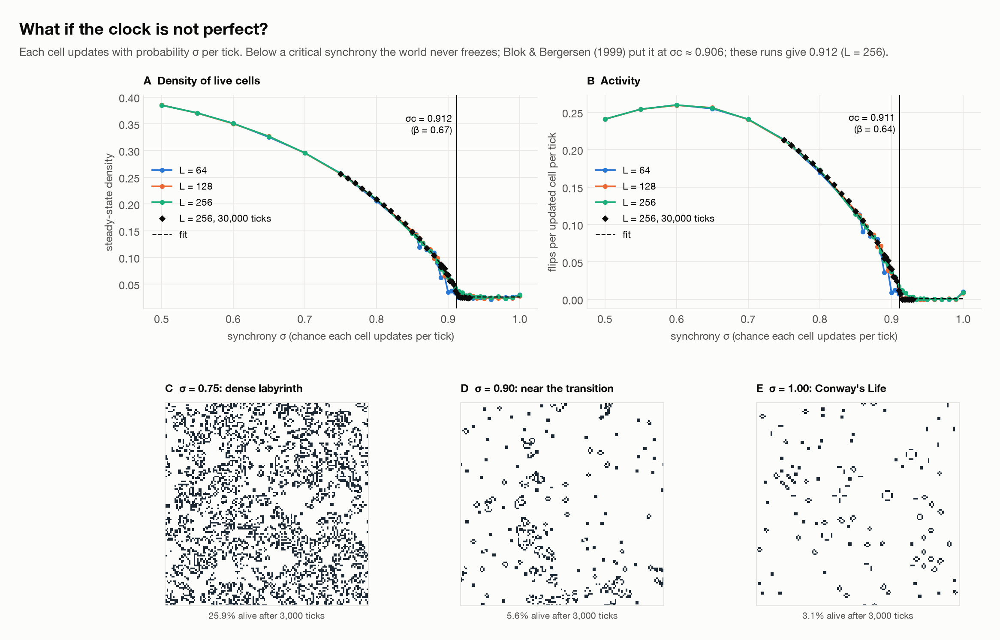

A small simulation study
Conway's Game of Life is one rule out of 262,144 possible ones. I built a fast simulator and ran four experiments: how random worlds live and die, how Conway's rule compares with its 131,072 relatives, whether Life is "critical" like a sandpile, and what happens when the cells lose their shared clock.
Draw by clicking or dragging. Keys: space play/pause, n step, r random, c clear, f flip a cell. Try lowering synchrony below 0.90 and watch Life stop freezing.
Fill a grid at random and press play. The world churns, then freezes into sparse "ash" made of still lifes and blinkers. Any starting density between 10% and 70% ends at almost the same place, about 3% of cells alive. Bigger worlds take longer to settle.

A Life-like rule says which neighbour counts give birth (B) and which let a cell survive (S). Leaving out rules where empty space flashes on (B0), there are 131,072 of them. I ran every one on the same 64×64 soup for up to 2,000 generations. Most rules either freeze within a few dozen steps or boil forever. Conway's rule is one of a small minority that churns for hundreds of generations and then settles into a sparse, structured world.

Changing a single condition usually breaks it. Of the 17 rules one change away, 9 are still changing after 4,000 generations (most of them dense and chaotic) and 4 settle within 300 generations. Only 4 churn and then settle into sparse ash the way Life does. One of those is HighLife (adding birth on 6).


In 1989 Bak, Chen and Creutz argued that Life organises itself into a critical state, like a sandpile on the verge of avalanching. Flip one cell of a frozen world and the disturbance can be any size. Later work disagreed. I repeated the experiment with about 130,000 avalanches on grids from 64×64 to 512×512.

Lifetimes do follow a power law, but only up to a cutoff. On a wrap-around grid that cutoff stops growing once the grid is 256 cells wide (about 1,860 generations), so Life has a typical avalanche scale. It is near-critical, not critical, which agrees with Bennett & Bourzutschky (1991) and Blok & Bergersen (1997). With dead edges avalanches leak out, so the cutoff is smaller and still growing at 512×512.

In Conway's Life every cell updates at exactly the same instant. Neurons, cells and people don't share a perfect clock. Here each cell updates with probability σ at every tick. Blok & Bergersen (1999) found a sharp phase transition, and this simulator reproduces it. Below a critical synchrony the world never freezes and turns into a dense, endlessly changing labyrinth. Our critical point sits about 0.005 above theirs, and it moved closer as the runs got longer.


This ties back to question 3. Ordinary Life (σ = 1) sits just on the frozen side of a real critical point near σ ≈ 0.91, which is a natural explanation for why it looks almost critical without being so.
The simulator is a small, tested Python package (lifelab) built on NumPy. Every figure here comes
from a script in experiments/, and the saved results are in the repository.
git clone https://github.com/mindemory/game_of_life.git
cd game_of_life
conda env create -f environment.yml # or: pip install -e ".[viewer]"
conda activate gameoflife
lifelab play # interactive window
lifelab render --pattern gosper --size 120x70 --steps 300 --out gun.gif
python experiments/asynchrony.py # re-run an experiment